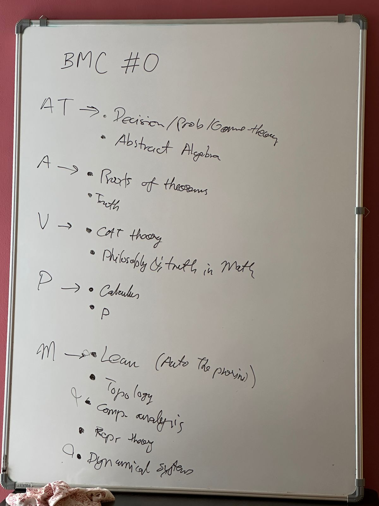
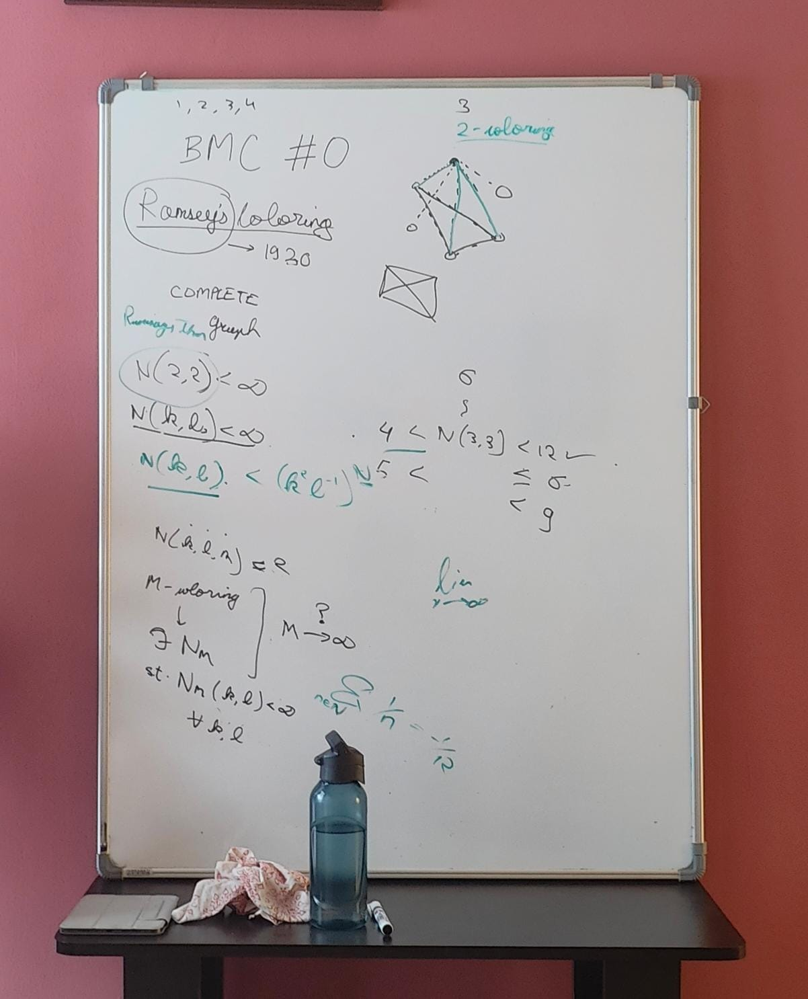

BBMP: BBengaluru Mathematics ClubP
Welcome to the home page of BBMP, a Bengaluru based Mathematics Club focused on the pleasure of understanding. This website is to keep resources and meeting archives. You can subscribe to the event calendar here.
To contribute, add content, or suggest changes, please submit PRs here. The file is an Org Mode file that gets converted to this HTML.
Since we don't have a group email ID, to contact us please write to Abhinav.
1. Archive
1.1. UPCOMING BBMP #5
LOCATION: Dialogues Cafe, Koramangala ID: 6a68ff36-a38b-4918-bc7c-eb5cec3f0214
1.2. UPCOMING BBMP #4
LOCATION: Dialogues Cafe, Koramangala ID: 02fb7554-5948-4094-ba49-66f482b8e622
While we can't plan the meetup completely, expect at least the following:
- @Manas to cover alleged Fermat's proof for FLT
- @Abhinav to either continue Modular forms or cover Lean formalization for FLT(n=3)
1.3. DONE BBMP #3
LOCATION: Dialogues Cafe, Koramangala ID: bca8d56d-e906-4006-812e-a5f5fe833962
Participants: @Satvik, @Abhinav, and @Manas
We discussed Euler's proof of Fermat's Last Theorem for \(n = 3\) and formulation for generating Pythagorean Triples (\(a^2 + b^2 = c^2\)) from coprimes.
1.4. DONE BBMP #2
LOCATION: Private ID: 10b49d7a-18f9-4896-841a-e5b87d47c04a
Participants: @Vivitsa, @Prabhsharan, @Manas, and @Abhinav
We discussed a few resources that people are studying. Also discussed a little bit of Modular forms and FLT.
1.4.1. Links
1.5. DONE BBMP #1
LOCATION: Online ID: 74198a51-6a68-44ec-91a3-dbecba8174b4
Participants: @Abhishek, @Manas, @Sanchit, and @Abhinav
Virtual check in and updates.
1.5.1. Links
1.6. DONE BBMP #0
LOCATION: Private ID: 9aced0ef-d1ac-4326-8d5d-6206a472a0be
Participants: @Ankit, @Manas, @Vivitsa, @Prabhsharan, and @Abhinav
Our first meetup (physical). We had some discussions around people's interest areas within Mathematics and how we want to take this forward. Additionally Manas took a session on Ramsey's theorem.
1.6.1. From the Whiteboard

Figure 1: Interest areas

Figure 2: Ramsey's Theorem
1.6.2. Links
Here are a few links that were shared in and around the discussion:
2. Resources
Here we collect a few motivational reads for different areas in Mathematics that some of us mentioned in our meetups. These are less theory heavy and have more pop-maths feel to them: